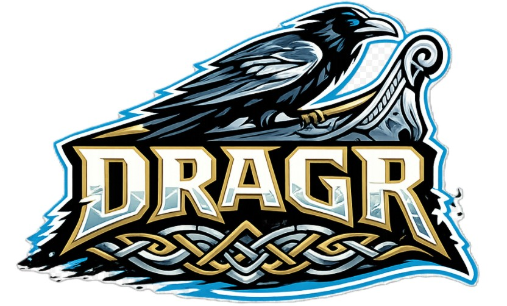
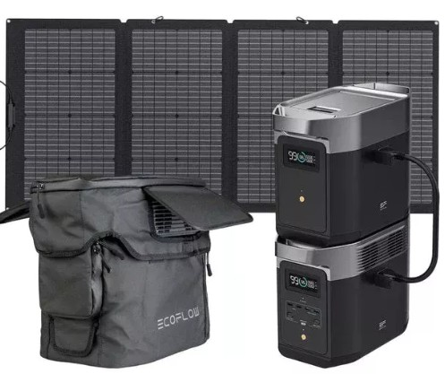
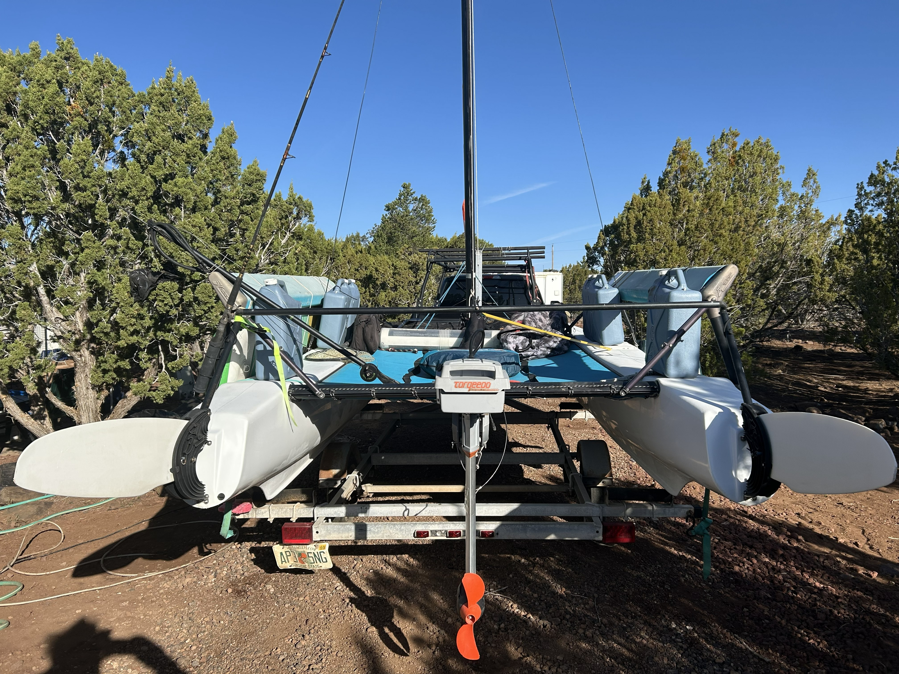
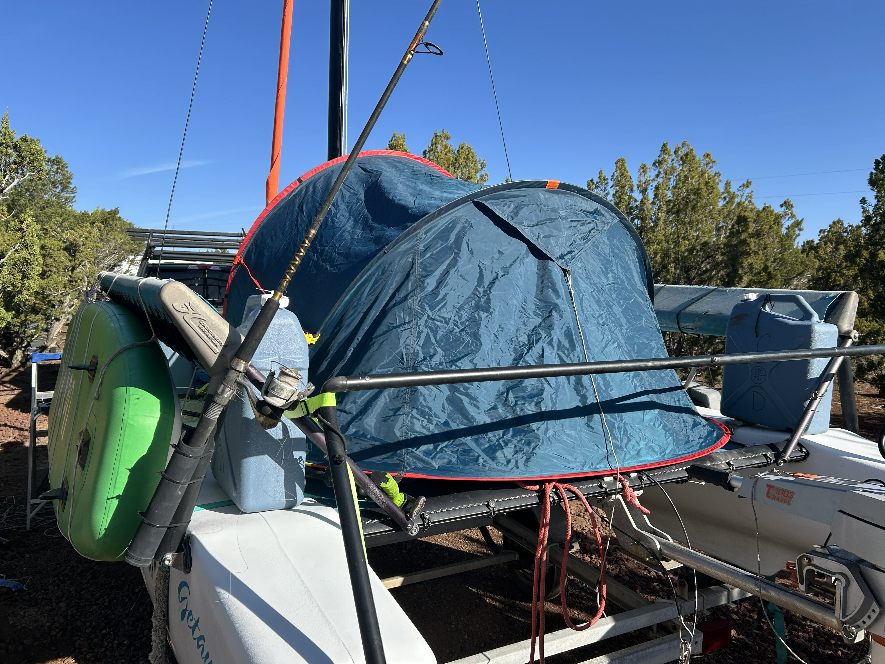

Blue Rim 5™ operates on a sail-first philosophy supported by disciplined systems design. Every platform, component, and configuration choice reflects durability, redundancy, and simplicity over complexity.




Sail-first primary movement. Electric auxiliary propulsion recharged by portable solar architecture. No fuel dependency. Silent operation. Lightweight, modular energy storage designed for expedition durability.
High-efficiency 2.5 HP equivalent outboard with integrated 915 Wh high-performance lithium battery. Silent direct-drive system producing just 33 dB with instantaneous throttle response.
Solar-rechargeable via flexible panels or standard AC charging. Integrated onboard computer with GPS-based range calculation. Completely waterproof (IP67) with high-efficiency propeller.
Total weight: 17.3 kg (short shaft 62.5 cm) / 17.7 kg (long shaft 75 cm).
Systems are not an accessory to the expedition — they are the foundation. Reliability, preparation, and disciplined execution are the platform on which Blue Rim 5™ moves forward.